Resposta. quando 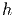 e  .
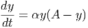
.
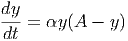
E 9.2.1. Use o Método de Euler melhorado para obter uma aproximação numérica do valor de 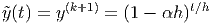 quando satisfaz o seguinte problema de valor inicial
Resposta. quando 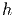 e .
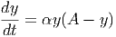
E 9.2.2. Use o Método de Euler e o Método de Euler melhorado para obter aproximações numéricas para a solução do seguinte problema de valor inicial para 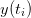:

 , 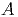, 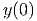, ,
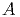, 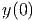, 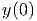, 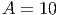, 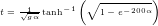, 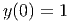,
, 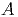, 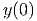, ,
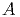, 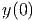, 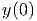, 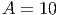, 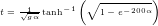, 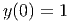,  .
.
Resposta.
![|--|-------|------|-----------|-------|---------------|
|t-|-Exato--|-Euler--|EulerMelhorado-|ErroEuler|Erro-EulerMelhorado-|
|0.0| 1. | 1. | 1. | 0. | 0. |
|0.1|0.826213 | 0.8 | 0.828 | 0.026213 | 0.001787 |
|0.2|0.693094 | 0.656 | 0.695597 | 0.037094 | 0.002502 |
|0.0.34|00..585084331231 |0.0.544762366669 | 00.5.59016058375 | 0.0.040401946753 | 00..000022727144 |
|0.5|0.435267 |0.394996 | 0.437861 | 0.040271 | 0.002594 |
|0.6|0.378181 |0.339894 | 0.380609 | 0.038287 | 0.002428 |
|0.7|0.330305 |0.294352 | 0.332551 | 0.035953 | 0.002246 |
|0.8|0.289764 |0.256252 | 0.291828 | 0.033512 | 0.002064 |
|0.9|0.255154 |0.224061 | 0.257043 | 0.031093 | 0.001889 |
|1.0|0.225400--0.196634----0.227126-----0.028766------0.001726------](main4353x.png)
No Scilab, esta tabela pode ser produzida com o código:
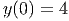